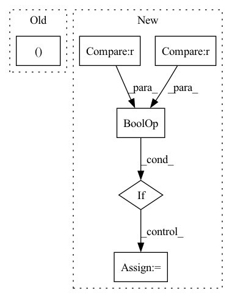

Pattern ID :718
Before Change
self.initialize()
def forward(self, inputs, targets):
enc_output, i_mask = None, None
if self.has_inputs:
i_mask = utils.create_pad_mask(inputs, self.src_pad_idx)
enc_output = self.encode(inputs, i_mask)
After Change
self.initialize()
def forward(self, padded_input, input_lengths, padded_target):
if self.feat_extractor == "emb_cnn" or self.feat_extractor == "vgg_cnn":
padded_input = self.conv(padded_input)
// Reshaping features
sizes = padded_input.size() // B x H_1 (channel?) x H_2 x TIn pattern: SUPERPATTERN
Frequency: 4
Non-data size: 6
Instances Fragment ID: 2716161
Project Name: qute012/kosr
Commit Name: b7d24b0d835254fd425224eba3421a3b7224e55f
Time: 2021-01-12
Author: ejrwls012@gmail.com
File Name: model/transformer/transformer.py
M Class Name: Transformer
N Class Name: Transformer
M Method Name: forward(4)
N Method Name: forward(3)
M Parent Class: nn.Module
N Parent Class: nn.Module
M File Name: model/transformer/transformer.py
N File Name: model/transformer/transformer.py
M Start Line: 19
M End Line: 28
N Start Line: 18
N End Line: 34
Before Change
p_out0 = torch.cat([p_out0, fpn_out0], 1) // 512->1024/32
pan_out0 = self.C3_n4(p_out0) // 1024->1024/32
outputs = (pan_out2, pan_out1, pan_out0 )
return outputsAfter Change
pan_out2 = self.C3_p3(f_out1) // 512->256/8
outputs["P3"] = pan_out2
if "P4" in self.out_features or "P5" in self.out_features:
p_out1 = self.bu_conv2(pan_out2) // 256->256/16
p_out1 = torch.cat([p_out1, fpn_out1], 1) // 256->512/16
pan_out1 = self.C3_n3(p_out1) // 512->512/16
outputs["P4"] = pan_out1
if "P5" in self.out_features:
p_out0 = self.bu_conv1(pan_out1) // 512->512/32 Fragment ID: 2716152
Project Name: developer0hye/yolox-backbone
Commit Name: d1d77b0859f96b37f20fb6831d3c1ce9802c1a30
Time: 2021-08-12
Author: developer.0hye@gmail.com
File Name: yolox_backbone/models/yolo_pafpn.py
M Class Name: YOLOPAFPN
N Class Name: YOLOPAFPN
M Method Name: forward(2)
N Method Name: forward(2)
M Parent Class: nn.Module
N Parent Class: nn.Module
M File Name: yolox_backbone/models/yolo_pafpn.py
N File Name: yolox_backbone/models/yolo_pafpn.py
M Start Line: 104
M End Line: 116
N Start Line: 95
N End Line: 124
Before Change
embeddings = self.embedding(encoded_captions) // (batch_size, max_caption_length, embed_dim)
// 初始化LSTM状态
h, c = self.init_hidden_state(encoder_out) // (batch_size, decoder_dim)
// 我们一旦生成了<end>就已经完成了解码
// 因此需要解码的长度实际是 lengths - 1After Change
// torch.cat([embeddings[:batch_size_t, t, :], attention_weighted_encoding], dim=1),
// (h[:batch_size_t], c[:batch_size_t])) // (batch_size_t, decoder_dim)
//teahcer forcing
if t==1 or (np.random.rand() < self.p) :
h = self.decode_step(
torch.cat([embeddings[:batch_size_t, t, :], attention_weighted_encoding], dim=1),
h[:batch_size_t]) // (batch_size_t, decoder_dim)
else:
h = self.decode_step(
torch.cat([self.embedding(torch.argmax(predictions[:batch_size_t, t, :],dim = 1)), attention_weighted_encoding], dim=1),
h[:batch_size_t]) // (batch_size_t, decoder_dim)
preds = self.fc(self.dropout(h)) // (batch_size_t, vocab_size) Fragment ID: 2716160
Project Name: qs956/latex_ocr_pytorch
Commit Name: 0455746d6d3141dfc06cd15fb9cd67a0b9defcfc
Time: 2020-03-21
Author: qs956@163.com
File Name: model/model.py
M Class Name: DecoderWithAttention
N Class Name: DecoderWithAttention
M Method Name: forward(5)
N Method Name: forward(4)
M Parent Class: nn.Module
N Parent Class: nn.Module
M File Name: model/model.py
N File Name: model/model.py
M Start Line: 231
M End Line: 250
N Start Line: 214
N End Line: 271
Before Change
x: B, H*W, C
H, W = self.input_resolution
B, L, C = x.shape
assert L == H * W, "input feature has wrong size"
assert H % 2 == 0 and W % 2 == 0, f"x size ({H}*{W}) are not even."After Change
x = x.view(B, H, W, C)
// padding
pad_input = (H % 2 == 1) or (W % 2 == 1)
if pad_input:
x = F.pad(x, (0, 0, 0, W % 2, 0, H % 2))
x0 = x[:, 0::2, 0::2, :] // B H/2 W/2 C
x1 = x[:, 1::2, 0::2, :] // B H/2 W/2 C Fragment ID: 2716165
Project Name: plemeri/inspyrenet
Commit Name: 12b05eaf235665fc6d1f89a9055b84d7cdfec923
Time: 2021-10-14
Author: taehoon1018@postech.ac.kr
File Name: lib/backbones/SwinTransformer.py
M Class Name: PatchMerging
N Class Name: PatchMerging
M Method Name: forward(4)
N Method Name: forward(2)
M Parent Class: nn.Module
N Parent Class: nn.Module
M File Name: lib/backbones/SwinTransformer.py
N File Name: lib/backbones/SwinTransformer.py
M Start Line: 310
M End Line: 313
N Start Line: 266
N End Line: 283